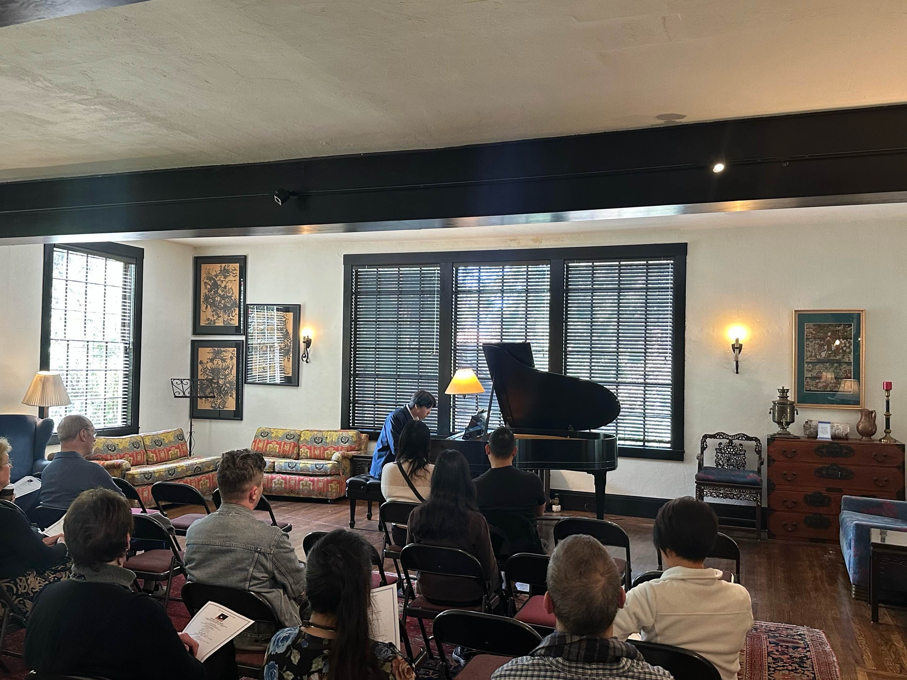

<!DOCTYPE html>
<html lang="en">
<meta name="description" content="Zhifan (Frank) Yin – Pianist, physicist, and UC Berkeley student. Explore performances, biography, and media.">
<meta name="keywords" content="Zhifan Yin, Frank Yin, pianist, UC Berkeley, physics, classical music">
<meta name="author" content="Zhifan (Frank) Yin">
<meta charset="UTF-8">
  <title>Zhifan (Frank) Yin – Pianist</title>
  <style>
    body {
      font-family: Arial, sans-serif;
      margin: 0;
      padding: 0;
      background: #f9f9f9;
      color: #333;
    }
    header {
      background: #000;
      color: white;
      padding: 1rem;
      text-align: center;
    }
    nav ul {
      display: flex;
      justify-content: center;
      list-style: none;
      padding: 0;
    }
    nav li {
      margin: 0 1rem;
    }
    nav a {
      color: white;
      text-decoration: none;
      font-weight: bold;
    }
    section {
      padding: 2rem;
      max-width: 800px;
      margin: auto;
    }
    iframe {
      max-width: 100%;
    }
    form input, form textarea {
      width: 100%;
      padding: 0.5rem;
      margin-bottom: 1rem;
    }
    form button {
      padding: 0.5rem 1rem;
    }
    footer {
      text-align: center;
      padding: 1rem;
      background: #eee;
    }
  </style>
</head>
<body>

<header>
  <h1>Zhifan (Frank) Yin</h1>
  <p>Concert Pianist/Physicist/Statistician</p>
  <nav>
    <ul>
      <li><a href="#about">About</a></li>
      <li><a href="#events">Events</a></li>
      <li><a href="#media">Media</a></li>
      <li><a href="#contact">Contact</a></li>
    </ul>
  </nav>
</header>


  <h3>Biography</h3>
  <p>Born in 2005, Changzhou, China, Zhifan started the study of piano at the age of five, when he was first instructed by Professor Zhenghao Lin from Nanjing School of Art. Now he's a student pianist at UC Berkeley, where he also majors in Physics, Statistics and Music.</p>
  <p>“Music is the divine way to tell beautiful, poetic things to the heart.”</p>
  <p>Your bio goes here. Include background, education, performance highlights, and personal mission.</p>
</section>

<section id="events">
  <h2>Upcoming Events</h2>
  <ul>
    <li><strong>June 26–28, 2025</strong> – Festival Name, Venue, Location</li>
    <li><strong>July 17, 2025</strong> – Recital at Venue, Location</li>
  </ul>
</section>


  
  
  <iframe width="560" height="315" src="https://www.youtube.com/embed/VIDEO_ID" 
    frameborder="0" allowfullscreen></iframe>
  <p>“Press quote or feature summary here.”</p>
</section>


  <h3>Alternative Contact Form</h3>
  <form action="#" method="post">
    <input type="text" name="name" placeholder="Your Name" required>
    <input type="email" name="email" placeholder="Your Email" required>
    <textarea name="message" placeholder="Your Message" required></textarea>
    <button type="submit">Send</button>
  </form>
</section>

<footer>
  <p>© 2025 Zhifan (Frank) Yin. All rights reserved.</p>
</footer>

</body>
</html>
